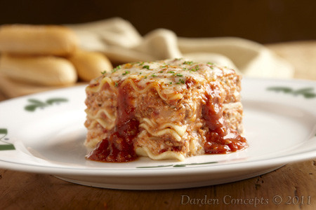

How to make the World's Best Lasagna!

Introducing the world's best lasagna recipe – a culinary masterpiece
that's bound to become a family favorite. This lasagna is a symphony of
flavors and textures, featuring layers of perfectly cooked lasagna
noodles, rich and savory meat sauce, and a generous sprinkling of melted
mozzarella cheese. Get ready to savor a slice of lasagna perfection with
each mouthwatering forkful!
Ingredients
- 1 medium yellow onion
- 1 tablespoon olive oil
- 1 pound lean ground beef
- 1/2 teaspoon kosher salt
- 1/4 teaspoon freshly ground black pepper
- 1 (24 to 25-ounce) jar marinara sauce
- 12 ounces low-moisture mozzarella cheese, shredded
- 1 pound box of dry lasagna noodles
- 15 to 16 ounces whole-milk ricotta cheese
Steps
-
Heat the oven to 400ºF. Arrange a rack in the middle of the oven and
heat the oven to 400°F.
-
Brown the beef and onion. Finely chop 1 medium yellow onion. Heat 1
tablespoon olive oil in a 12-inch or larger regular or cast iron skillet
over medium-high heat until shimmering. Add the onion, 1 pound lean
ground beef, 1/2 teaspoon kosher salt, and 1/4 teaspoon freshly ground
black pepper, and cook, breaking the beef up into small pieces with a
wooden spoon, until the beef is cooked through, 6 to 8 minutes. Remove
from the heat and let cool for 5 minutes.
-
Prepare the baking dish and assemble the meat sauce. Open 1 (24 to
25-ounce) jar marinara sauce (3 cups). Spread a thin layer of the sauce
in the bottom of a 9x13-inch baking dish. Stir the remaining sauce into
the ground beef mixture.
-
Begin layering the lasagna. Shred 12 ounces low-moisture mozzarella
cheese if needed (3 cups). Place 5 lasagna noodles in the baking dish,
breaking them if needed to create a single layer (it’s OK if the noodles
overlap slightly). Dollop and spread 1 cup of the ricotta cheese over
the noodles. Dollop and spread about 1 1/2 cups of the meat sauce on the
ricotta, then sprinkle with 1 cup of the mozzarella.
-
Continue layering the lasagna. Arrange 5 more noodles over the
mozzarella, followed by 1 cup of the ricotta cheese, 1 1/2 cups of the
meat sauce, and 1 cup of the mozzarella. Top with a final layer of 5
noodles and the remaining sauce, spreading the sauce thin so that it
almost completely covers the noodles. (Reserve the remaining 1 cup
mozzarella for the end of baking.) Cover the dish tightly with aluminum
foil.
-
Bake the lasagna for 1 hour. Bake for 1 hour. Check to make sure the
noodles are done by poking the lasagna with a knife; the knife should
slide easily through all the layers. If it doesn't, cover and cook for
15 minutes more.
-
Sprinkle with the remaining mozzarella and finish baking. Uncover the
lasagna and sprinkle with the remaining 1 cup mozzarella. Bake uncovered
until the mozzarella is melted and lightly browned, and the sauce is
bubbling, 8 to 10 minutes more.
-
Cool the lasagna for 15 minutes. Let the lasagna cool on a wire rack for
at least 15 minutes before serving.